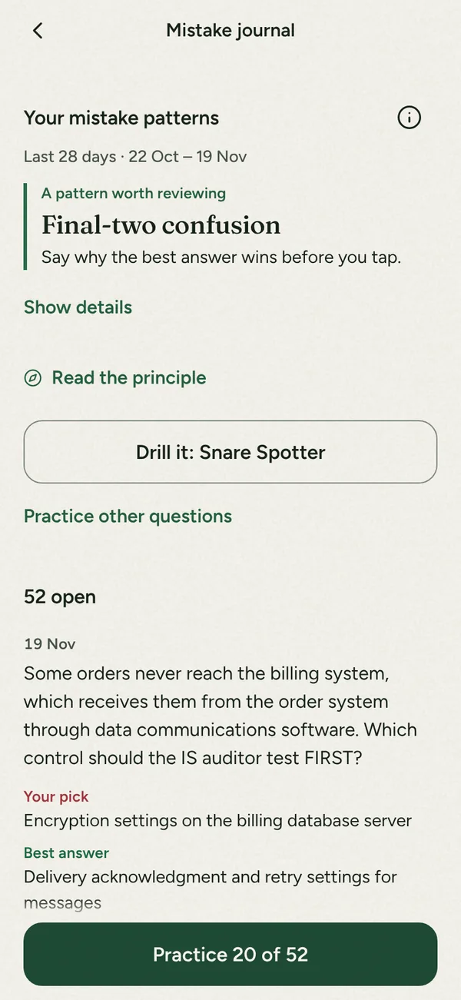
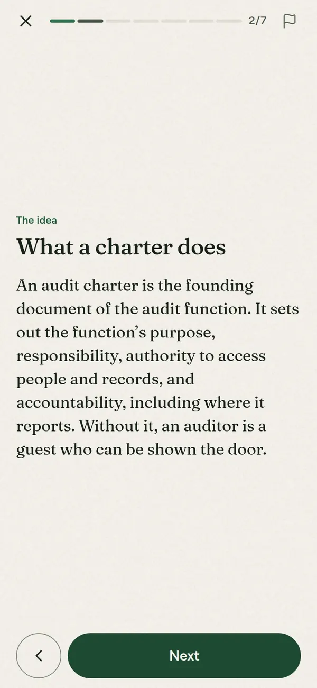

Exam prep, starting with CISA
Make roomfor better thinking.
CISA exam practice that teaches the reasoning behind each best answer. More IT audit and risk certifications are coming.
Free in your browser, no account needed
Android™ Free app

iPhone Web now, app later
Join the waitlist for the iPhone app
Start with a plan
Your next step, already in view.

Understand the why
The best answer has a reason.

Learn from misses
Mistakes, turned into progress.

Android app screens · sample data
- CISA practice across all 5 domains
- The reasoning behind every best answer
- Study notes for every exam topic
- Missed questions come back for another try
A look inside
One study session,
start to finish.
The CISA exam asks you to think like an auditor. Here is one study session in the Android app, in five real screens. Coach me hints, short lessons and the Mistake journal are in the Android app, not on the web.
- 01 / Today
A clear place to begin
Your daily plan brings the next study session into focus. The readiness range, an estimate of where you stand, is a guide, not a guarantee.
- 02 / Practice
Questions that ask for judgment
Work through scenario-based questions that ask what an auditor should do first. Stuck? Tap Coach me for a hint before you answer.

- 03 / Answer review
See why the tempting answer is wrong
Learn why the best answer wins, where the trap lies, and which auditor principle to carry into the next question.
- 04 / Learn
Make it click
Short lessons and study notes explain each idea in plain language, one screen at a time.

- 05 / Mistake journal
Turn misses into progress
Every question you miss is kept in your Mistake journal with its explanation, ready to revisit when you are.
Now try a few questions of your own.
Study free on the webFrom our first testers
What a tester said.
The app is user friendly and the questions are easy to understand. The bookmark and the feature that repeats the questions you got wrong are useful. I did 100 questions in one sitting and was surprised that it wasn’t tiring to answer.
This tester was offered free Premium access for completing the beta. The reward did not depend on what they said.
Before you start
A few things
to know.
Can I use KaiSip today?
Yes. Study free on the web in any browser, on a computer, an iPhone or an Android phone. On Android you can also get the KaiSip app on Google Play.
What do I get on the web, and what is only on Android?
Study free on the web, with no account: a free set of practice questions from every CISA domain, all the study notes and a mini mock exam. Short lessons, Coach me hints and the Mistake journal are in the Android app. The full course, with every practice question and full mock exams, is not open to everyone yet. Your progress is kept in your browser on that device. The screens on this page are from the Android app.
What happens when I join the iPhone waitlist?
We email you a link to confirm. After that we only email you when the iPhone app is ready and when new KaiSip courses open, and every email has an unsubscribe link. Kit, our email service, keeps the list in the United States. Joining is only an email list: it does not create a KaiSip account. The beta has ended, so the waitlist does not come with the testers’ free Premium reward.
Is it free?
Yes. The web app and the Android app on Google Play are free, with no account and no card. Each has a free set of practice questions from every CISA domain. Paid Premium features are planned, and we will tell you before you pay for anything.
When is the iPhone app coming?
We are building it. There is no date yet. Until then, open KaiSip on the web in Safari, tap Share, then Add to Home Screen: it opens full screen, like an app, and needs an internet connection. Add it before you study much: the Home Screen app keeps its own progress, separate from Safari. Join the iPhone waitlist to hear when the app is ready.
Is KaiSip affiliated with ISACA?
No. KaiSip is independent and is not affiliated with, endorsed by or sponsored by ISACA. CISA® and ISACA® are registered trademarks of ISACA.
iPhone waitlist
Hear when the
iPhone app is ready.
Leave your email. We’ll email you when the iPhone app is ready and when new KaiSip courses open. Nothing else.
The iPhone app has no date yet. Until then, open KaiSip on the web in Safari and add it to your Home Screen.